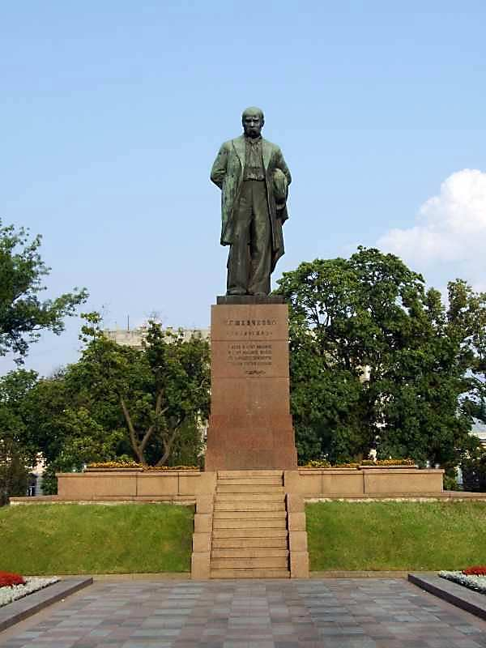
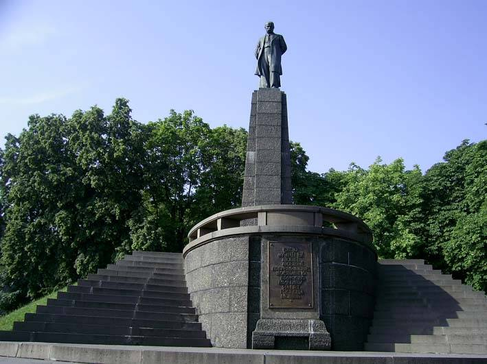
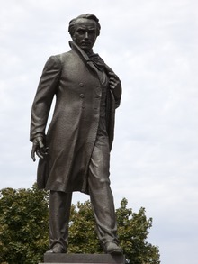

Пам’ять про Тараса Шевченка
Вшанування і спадщина
Тарас Шевченко — символ української нації, культури і боротьби за свободу. Його творчість та життя залишили незабутній слід у серцях мільйонів. В Україні та світі зберігають пам’ять про нього через пам’ятники, музеї, літературні читання і культурні заходи.
Пам’ятники
Пам’ятники Шевченку встановлені у багатьох містах України та за її межами. Найвідоміші — у Києві, Черкасах, Каневі, Харкові, а також у США, Канаді, Польщі. Вони є символами національної гідності та пам’яті.



Музеї і культурні події
В Україні діють музеї Шевченка, де зберігаються його особисті речі, рукописи та картини. Щороку проходять фестивалі, конференції та літературні вечори, присвячені його творчості. Це допомагає молодим поколінням долучатися до національної історії.
«Кобзар» — душа українського народу, яка живе вічно.